Bulletins neige · Guides
Des bulletins neige quotidiens pour les skieurs : où est la neige, ce qui arrive et où skier, d'après la carte de neige SnowScope et les stations de mesure. Chaque chiffre vient des données du jour.
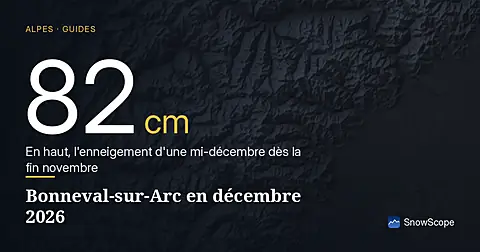
Bonneval-sur-Arc, en Haute-Maurienne, commence décembre avec un très bon enneigement. Hauteurs du jour, prévisions, et ce que disent 46 hivers pour décembre.

Enneigement de l'Alpe d'Huez fin novembre 2026, ce que disent 46 hivers sur le 25 décembre, et quels quartiers et quelles pistes choisir pour les fêtes.
Piau-Engaly fin novembre 2026 : la neige du jour, la semaine qui vient, et ce que disent 46 hivers sur le 25 décembre dans la plus haute station des Pyrénées françaises.

Station par station, d'ouest en est : la neige du jour dans les Pyrénées françaises, espagnoles et andorranes, comparée à une fin novembre normale, et ce qu'il faut attendre pour décembre.


Piau-Engaly se situe à 1 762 m avec des pistes jusqu'à 2 527 m. Sur 46 hivers passés, la profondeur habituelle au sommet est de 88 cm en bas, 123 cm à mi-pente et 159 cm au sommet.

L'Alpe d'Huez Grand Domaine mois par mois : hauteur de neige habituelle en bas, à mi-pente et au Pic Blanc d'après 46 hivers passés, les semaines sûres, les décembres faibles et la tendance.

Choisissez une région, vos dates, votre budget et ce qui compte ; chaque station est classée avec la neige probable au départ, le forfait, l'hôtel et les repas par personne, les chalets à réserver, et un mode jeu.

Forfaits journée alpins dès 36 EUR : neuf stations comparées selon le prix, les kilomètres de pistes et la neige qu'elles reçoivent habituellement, pour trouver la meilleure journée de ski pour votre argent.

Des forfaits journée dans les Pyrénées à partir de 46 EUR : six stations en France, en Espagne et en Andorre comparées par prix, puis par l'enneigement qu'elles connaissent habituellement en décembre et en janvier.

Ski sur glacier à partir de 68 EUR la journée : nous avons comparé sept glaciers en France, en Autriche, en Allemagne et en Suisse selon le prix et l'enneigement qu'ils affichent habituellement en décembre.

Six jours de ski à partir de 191 EUR : nous avons classé dix forfaits de ski pas chers en Europe par prix, puis vérifié 46 hivers passés pour savoir où la neige est fiable.

De 20 EUR pour un week-end d'ouverture à des forfaits de 6 jours avant Noël : un calendrier des meilleurs bons plans de début de saison dans les Alpes pour 2026, avec la neige à laquelle s'attendre.

Beaver Mountain propose des forfaits à prix fixe de 75 $ sans supplément en haute saison. Début décembre, l'enneigement est souvent faible ; visez la mi-décembre ou plus tard quand la neige est plus fiable.

Bridger Bowl facture 86 $ en ligne pour 2026/27. À mi-montagne, 50 cm le 15 décembre dans la moitié des hivers ; la semaine de Noël améliore les probabilités à 78 %.

Le domaine skiable de haute altitude du Colorado maintient son forfait remontée adulte à 49 $ pour la saison 2026-27 ; la neige à mi-montagne atteint 66 cm vers la mi-décembre lors d'un hiver typique. Données du 13 novembre 2026.

Sunlight près de Glenwood Springs fait face à un pari en début de saison en décembre. À la mi-décembre, vous pouvez vous attendre à 67 cm à mi-montagne, bien que seulement 72 % des hivers atteignent cette profondeur.

Le secteur mi-montagne de Timberline compte 132 cm de neige typique le 15 décembre. Les pentes supérieures atteignent 147 cm. Les forfaits journée entière commencent à 129 $ hors pointe.

Sept stations de ski à l'Ouest américain proposent des réductions en semaine en décembre. Ski Cooper économise 50 dollars par jour du lundi au vendredi, Mt. Baker 16,62 dollars en heures creuses. Les probabilités de neige à mi-montagne varient de 70 % à 93 % d'ici le 15 décembre.

Indy Base Pass 419 $, Indy+ 469 $, deux jours dans chaque station partenaire. Nous l'avons comparé aux prix journaliers vérifiés de sept stations Indy en décembre, et à leurs chances de neige.

Les forfaits adultes de Lookout Pass pour 2026-2027 sont à 63 $ en semaine avec réservation, 75 $ le week-end. À mi-montagne, on avait 20 in (50 cm) le 15 décembre dans 85 % des hivers passés.
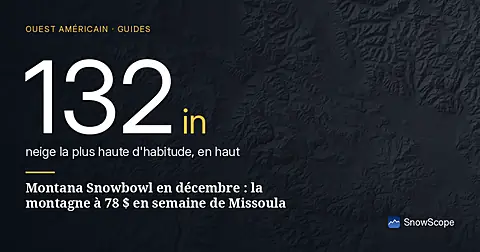
Station locale près de Missoula à 2 296 m d'altitude avec forfaits remontées à 78 dollars en semaine. Les pentes intermédiaires et sommitales accumulent généralement 76–93 cm d'ici la mi-décembre. Données du 13 novembre 2026.

Le forfait 3 jours de Schweitzer offre trois journées pour 249 $ sur une crête qui s'élève de 1 221 m à 1 949 m. La neige à mi-montagne le 15 décembre atteint en moyenne 90 cm, avec 85 % des hivers au-dessus de 50 cm.

Krvavec mi-montagne a typiquement 13 cm de neige le 15 décembre sur 46 hivers, mais le sol nu dans 11 d'entre eux. Forfait journée 47 EUR.

Skiez sur 157 km de pistes balisées à Serre Chevalier, où le sommet de la montagne a 100 % de chances d'être enneigé d'ici la mi-décembre.

Turracher Höhe a 23 cm à mi-montagne le 15 décembre typique, mais seulement 39 % des hivers atteignent 30 cm là-bas à la mi-décembre. Données du 13 novembre 2026.

Hochkar en moyenne montagne a 38 cm typiquement le 15 décembre, et 63 % des hivers ont eu 30 cm ou plus cette semaine-là. Forfaits journaliers à partir de 32,90 EUR les jours calmes.

Les chances de neige à Idre Fjäll en décembre s'améliorent nettement après la mi-mois. Le 13 novembre, l'épaisseur typique à mi-montagne le 15 décembre est de 32 cm.

Brighton à partir de 72 $ contre Ski Cooper à 49 $ en semaine et Wolf Creek à 96 $ : les stations économiques de l'Utah et du Colorado comparées sur 46 hivers de neige en décembre.

Dix stations de ski européennes classées pour leur rapport qualité-prix en décembre, avec Les 2 Alpes en tête avec 75 cm de neige à mi-montagne.

Brundage Mountain offre une neige fiable en début de saison près de McCall, en Idaho. La profondeur typique à mi-montagne atteint 77 cm vers la mi-décembre, avec des forfaits à partir de 65 $ certains jours.

Boí Taüll commence à 2 039 m et bat Baqueira Beret sur le prix du forfait, bien que la neige de début décembre demande un peu de patience.
Sälen en décembre : 28 cm un 15 décembre typique et 48 % des hivers avec 30 cm à la mi-décembre, moins qu'aux années 1980 ; Trysil, à côté, fait mieux.

Snow King se trouve au pied de Jackson. Vers la mi-décembre, la mi-montagne accumule généralement 71 cm. Données au 13 novembre 2026.

Orcières Merlette offre une base élevée à 1 826 m et un forfait 6 jours dès 227 EUR, ce qui en fait un choix fiable pour un séjour au ski en décembre.

Alpe d'Huez vaut-elle le coup en décembre 2026 ? Nous vérifions les probabilités de neige, le prix de départ de 58,00 EUR et comparons avec Les 2 Alpes.

Les forfaits slovènes sont les moins chers (Krvavec 205 EUR les 6 jours), mais la neige naturelle de décembre y est rare ; Lachtal, le Hochkar et le glacier de la Möll font mieux.
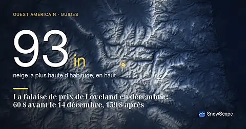
Loveland vend des forfaits en ligne à 60 $ jusqu'au 13 décembre, puis 159 $ à partir du 14 décembre. Les chutes de neige en début décembre moyennes sont de 50 cm à mi-montagne, mais la base est deux fois moins épaisse qu'en plein hiver.

Cauterets propose 25 km de pistes pour 46 EUR, mais notre historique d'enneigement montre que la meilleure chance d'avoir de la neige est la dernière semaine de décembre.
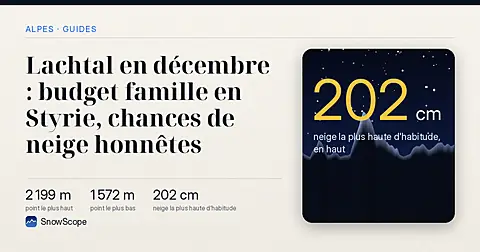
Lachtal coûte 62 EUR par jour et les enfants de moins de 7 ans skient gratuitement. À mi-montagne, il y avait 30 cm ou plus dans 72 % des décembres à partir de la mi-mois. Épaisseur de neige au 13 novembre 2026.

Les forfaits en ligne du White Pass démarrent à 69 $ hors pointe et 89 $ les jours de pointe, et la mi-montagne avait 20 in (50 cm) de neige le 15 décembre dans 87 % des hivers passés.

Skiez sur les 131 km de pistes de la Forêt Blanche en décembre avec un forfait six jours à 298 EUR.

Le forfait 6 jours de Ruka coûte 265 EUR. Les chances de neige passent de 39 % en début décembre à 85 % à la semaine de Noël. Prévoyez la mi-décembre ou plus tard.

À Monterosa Ski, le forfait journée en ligne va de 40,00 à 71,00 EUR. En décembre, la neige est en altitude : 124 cm habituels à 3 030 m, 6 cm à 1 207 m.

Wolf Creek affiche 87 cm à mi-montagne le 15 décembre en année typique. Les tarifs de pointe commencent le 20 décembre. Données : 13 novembre 2026.
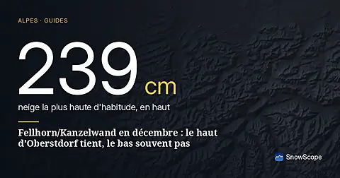
Le 15 décembre à Fellhorn/Kanzelwand : 63 cm au sommet à 1 965 m, 30 cm à mi-montagne, seulement 10 cm à la base à 918 m. Organisez votre séjour en conséquence.

Planifiez votre séjour de décembre 2026 aux Les Orres en comparant les prix des forfaits hebdomadaires avec notre historique de neige de 46 hivers passés.
Mi-montagne à Hemavan compte 82 cm de neige en moyenne le 15 décembre. Chaque hiver depuis 46 ans a eu 30 cm ou plus mi-décembre. Données du 13 novembre 2026.

Brighton à mi-montagne enregistre typiquement 94 cm le 15 décembre. Données du 13 novembre 2026.

Comparez Grandvalira et les stations espagnoles en décembre 2026 pour les hauteurs de neige, l'altitude des remontées et les prix à partir de 49,00 EUR.

Le Pitztaler Gletscher retient mieux la neige de décembre que la plupart des stations des Alpes : 87 cm à mi-hauteur vers la mi-décembre, avec chaque hiver récent au-dessus de 30 cm. Données du 13 novembre 2026.
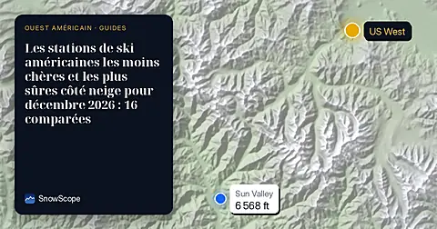
16 stations de ski américaines classées par probabilité de neige le 15 décembre et prix du forfait adulte à la journée. Grand Targhee en tête avec 100 % de probabilité ; cinq stations combinent plus de 80 % de probabilité avec forfaits sous 80 $. Données du 13 novembre 2026.

Pour une semaine de ski en famille à petit budget à Astún-Candanchú en décembre, visez la fin du mois, quand les pistes supérieures ont une bonne neige dans 67 % des hivers passés.

Seuls la Zugspitze et le Fellhorn supérieur conservent de manière fiable 30 cm à la mi-décembre. Les pistes bavaroises moins élevées offrent des tarifs moins chers mais beaucoup moins de probabilités de neige. Données du 13 novembre 2026.

Puy-Saint-Vincent propose un forfait adulte 1 jour à 44 EUR avec une bonne neige en décembre en altitude, comparé ici à son grand voisin Serre Chevalier.

Grand Targhee bénéficie d'une neige fiable en décembre à toutes les altitudes. À mi-montagne, 118 cm est typique à la mi-décembre, avec 100 % des hivers atteignant 50 cm ou plus. Données du 13 novembre 2026.

La base d'Oppdal compte 60 cm de neige un 15 décembre type, avec 93 % des hivers conservant 30 cm ou plus à la mi-décembre. Données de 46 hivers.

Grimentz-Zinal propose 71 km de pistes et un enneigement fiable en altitude pour votre voyage en décembre, avec des forfaits 6 jours à CHF 339,00.

Autriche avant Noël : Galtür 258 EUR et Kühtai 269 EUR les 6 jours, avec 30 cm dans plus de 90 % des hivers ; les glaciers coûtent plus, les petites stations sont un pari.

Vous prévoyez un voyage en décembre à Baqueira Beret ? Consultez notre historique d'enneigement, les prix des forfaits à partir de 70,00 € pour une journée, et comparez avec Astún-Candanchú.

Nous classons les stations de ski françaises selon les probabilités de neige en décembre et le prix des forfaits, à partir de 36,00 EUR pour un forfait journée adulte aux Karellis.
Décembre n'apporte que 18 cm de profondeur typique à mi-montagne à Oukaimeden, contre 53 cm en mars. Le début de saison est maigre mais possible. Données du 13 novembre 2026.

Le mi-versant de Galtür affiche 55 cm le 15 décembre type. Les forfaits basse saison coûtent 55,50 EUR jusqu'au 18 décembre. Données de 46 hivers, 1980-81 à 2025-26.

Le secteur médian de Geilo reste skiable en décembre dans 96 % des cas. Épaisseur type le 15 décembre : 42 cm en bas, 57 cm au milieu, 68 cm en haut. Forfait journée à partir de 590 NOK.

Grandvalira est souvent vendue comme une destination pas chère en décembre, pourtant la neige naturelle à la base n'atteint en moyenne que 9 cm lors des hivers passés.

Le 15 décembre, Hemsedal affiche 32 cm en bas, 70 cm à mi-montagne et 106 cm en haut. L'altitude est décisive ici.

Le 15 décembre à 3 245 m, Hintertux affiche 98 cm de neige sur 46 hivers d'historique. Chaque hiver a reçu 30 cm ou plus la semaine avant Noël à cette altitude.

Comparez les probabilités de neige en décembre et les tarifs vérifiés de forfaits dès 40,00 EUR dans les domaines skiables italiens pour votre week-end en voiture.

La base de Kühtai à 1 939 m reste enneigée de manière fiable en décembre. Le 15 décembre en moyenne 60 cm à la base, 72 cm à mi-montagne, 112 cm au sommet. Forfait basse saison 6 jours 269 EUR jusqu'au 18 décembre.

Les 2 Alpes culmine à 3 511 m pour de la neige abondante en décembre 2026, avec un forfait adulte 6 jours à 266,50 EUR.
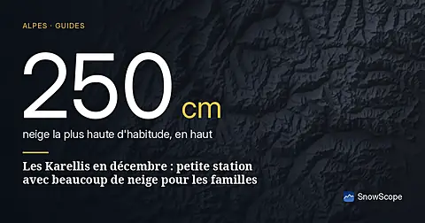
Les Karellis propose 45 km de pistes et un forfait adulte 6 jours à 191,00 EUR avec 98 % de chances d'avoir de la neige à mi-montagne fin décembre.

La neige de décembre à Levi s'est renforcée au fil du temps. Ces 15 derniers hivers : 100 % des semaines de Noël ont eu 30 cm ou plus. Profondeur typique 15 décembre : 38 cm. Données 13 novembre 2026.
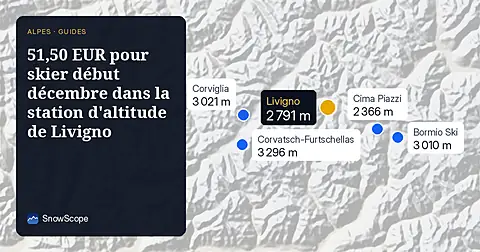
Skiez à Livigno pour 51,50 EUR par jour avant le 18 décembre, quand la neige au sommet atteint 30 cm dans 100 % des hivers passés.

Le 15 décembre à Michlifen, 89 % des hivers sont presque sans neige. Les meilleures chances arrivent après une tempête, pas selon le calendrier. Données du 13 novembre 2026.

Montgenèvre affiche 56 cm de neige habituelle en décembre à son pied de station, offrant aux skieurs du week-end une meilleure couverture précoce que Sestriere, de l'autre côté de la frontière.

Skier à Obertauern en décembre : 43 cm un 15 décembre typique à mi-pente, forfait 6 jours à 331 EUR avant Noël. Historique de neige et prix.

À la station de ski d'Oukaïmeden au Maroc, un 15 décembre typique n'apporte que 16 cm à mi-montagne. SnowScope montre les probabilités à partir de 46 hivers de données.

Oukaïmeden se trouve à 50 km de Marrakech. La neige de décembre est fine et imprévisible : organisez-vous autour des tempêtes, pas du calendrier. Données du 13 novembre 2026.
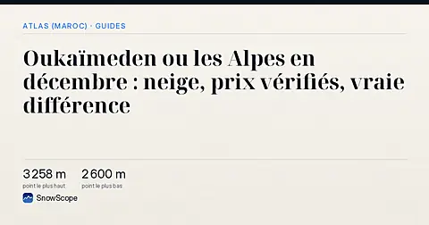
Le 15 décembre, Oukaïmeden mi-montagne affiche 16 cm contre 89 cm à Val Thorens. Nous avons vérifié les tarifs des remontées. Données du 13 novembre 2026.

Pila, au-dessus d'Aoste, combine un forfait journée fixe à 60,00 EUR et une neige fiable en décembre sur ses pistes d'altitude.

Les remontées de Saas-Fee atteignent 3 556 m, où notre historique montre que 100 % des hivers passés ont au moins 30 cm de neige à la mi-décembre.

À mi-montagne, la neige atteint 30 cm dans 83–100 % des décembres en Scandinavie. Tarifs fixes en Finlande ; tarification dynamique en Norvège et Suède. Données de 46 hivers, 13 novembre 2026.

Chances de neige en décembre sur 46 hivers et prix journaliers vérifiés : Ski Cooper 49 $, Les 3 Vallées 75,70 €, Oukaïmeden sans tarif officiel. Là où une journée de ski pas chère en décembre fonctionne.

Découvrez les pistes tranquilles de St-Luc Chandolin, où la neige à mi-montagne atteint 30 cm dans 98 % des hivers fin décembre.

Trysil en décembre : 44 cm à mi-pente un 15 décembre typique, 83 % des hivers avec 30 cm à la mi-décembre ; les prix sont dynamiques, réservez tôt.

Valloire-Valmeinier propose 131 km de pistes et 98 % de chances d'avoir 30 cm de neige à mi-montagne mi-décembre.

Le glacier de Zugspitze a 122 cm de neige typique le 15 décembre à 2 627 m ; le sommet de Garmisch-Classic en a 57 cm. Même prix, enneigement différent. Données de 46 hivers.

Mölltaler Gletscher en décembre : 66 cm en bas (2103 m) et 128 cm à mi-pente un 15 décembre typique ; forfait 6 jours basse saison à 332 EUR.
Le Mt. Baker en décembre : 46 in (116 cm) de neige à mi-montagne pour un 15 décembre type, et un forfait à 98,80 $ du lundi au jeudi, vendu uniquement sur place le jour même.

Un débutant prudent peut-il faire confiance à Courmayeur en décembre, alors que la moyenne à mi-montagne est de 60 cm de neige sur nos hivers passés ?

Åre en décembre : 40 cm à mi-pente un 15 décembre typique, 89 % des hivers avec 30 cm à la mi-décembre, mais une forte baisse au sommet depuis les années 1980.
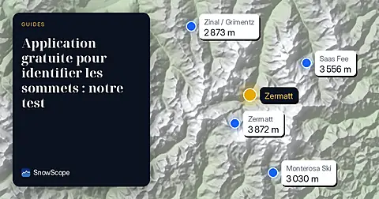
Le détecteur de sommets de SnowScope est une application gratuite pour identifier les sommets : pointez votre téléphone vers les montagnes et il nomme les sommets, avec leur altitude, leur distance et le temps de montée. Nos tests : 98 % des sommets affichés sont réellement visibles, et sur de vraies photos il a ramené des erreurs de boussole allant jusqu'à 105° à 0,15°. Gratuit avec 3 noms, tous les sommets pour 0,99 € une seule fois.

Prévision de neige à Park City (Utah) le 13 novembre 2026 : presque pas de neige au sol pour l'instant, environ 5 in près du sommet avec la tempête du week-end et une limite pluie-neige de 7,400 à 7,700 ft, pluie en bas, et environ 12 in en haut sur la semaine.

Conditions de neige à Silvretta Montafon le 13 novembre 2026 : 4,5 cm au sommet à 2421 m, mi-pente et vallée à nu, environ 40 cm attendus en altitude cette semaine, pluie dans la vallée sous 1 500 m.

Chutes de neige à Val Thorens, 13 novembre 2026 : 27 cm tombés au sommet (3175 m) et 17 cm à 2498 m en sept jours ; hauteur de neige de 50 cm et 8 cm. Sept prochains jours : 86 cm au sommet, 73 cm à 2498 m, limite pluie-neige bien sous le village. La saison habituelle sur 46 hivers.

La hauteur de neige à Chamonix le 13 novembre 2026, altitude par altitude : rien au fond de la vallée, 1 cm à 2001 m, 12 cm en haut de Brévent-Flégère (2486 m), 5 à 24 cm en haut des Grands Montets (2768 m). Environ un mètre prévu en altitude cette semaine, de la pluie dans la vallée. L'épaisseur habituelle sur 46 hivers.

Bulletin neige des Menuires du 13 novembre 2026 : 28 cm au sommet (2838 m), rien au sol à 2112 m ni à 1386 m. Environ 80 cm attendus au sommet en sept jours, limite pluie-neige vers 1500 à 1700 m. Pourquoi Val Thorens, 450 m plus haut dans la même vallée, en a déjà plus.

Les conditions de neige à Tignes le 13 novembre 2026 : 42 cm au sommet (3447 m), 12 cm à 2503 m, une vallée sans neige à 1559 m, et 99 cm prévus au sommet sur sept jours, avec de la pluie sous 1700 m environ. La comparaison avec 46 hivers passés.
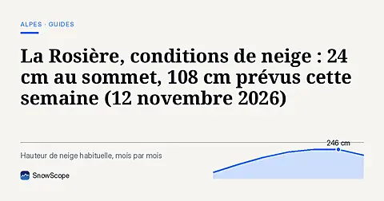
La Rosière au sommet retient 24 cm le 11 novembre ; les sept prochains jours annoncent 108 cm à 2 799 m, 61 cm à mi-montagne.

Prévisions aux Arcs pour le 12 novembre : 69 cm attendus au sommet, 46 cm à mi-montagne au cours des sept prochains jours. La neige s'accumule.

Méribel affiche 24 cm au sommet et fait face à 99 cm de neige nouvelle en sept jours. Données du 11 novembre 2026.
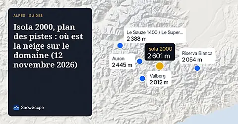
Épaisseurs de neige à Isola 2000 le 11 novembre 2026 : 9 cm au sommet, 7 cm à mi-montagne, 2 cm en bas de station. Un manteau hivernal précoce sur cette station alpine.

Pas encore de neige à Oukaïmeden le 12 novembre. Les pics de l'Atlas sont dénudés ; la saison hivernale atteint généralement son apogée en mars avec 58 cm au sommet.

Nous avons comparé la neige du 10 novembre avec la neige la plus épaisse de chaque hiver, dans 46 stations de ski et sur 46 hivers. Un début enneigé aide, mais moins que beaucoup de skieurs ne le pensent.
Une tempête le 4 novembre a laissé 8 à 13 inches de neige fraîche sur cinq stations d'altitude du Colorado, près d'Aspen. Cinq jours plus tard, la moitié avait disparu. Ce que cela veut dire pour vos journées de poudreuse.

Trois hivers maigres d'affilée ont pris fin en 2025-26 ; cet automne a commencé normalement.

Une carte des pentes des Grands Montets et de sept autres domaines skiables montre quelle part du terrain dépasse 30°, 35° et 40°, et pourquoi ce seuil compte pour les avalanches.

Sur 46 hivers, les stations du versant italien et des Alpes du Sud françaises ont connu 24 fois un hiver relativement plus généreux que le versant nord. Le graphique, les grandes années et la météo qui les explique.

En décembre, la neige dépend d'abord de l'altitude. 46 hivers passés dans 676 stations des Alpes montrent combien de neige attendre le 1er, le 15 et le 22 décembre, de moins de 1 200 m à plus de 2 400 m.

Whistler Blackcomb a reçu 75 cm de neige nouvelle au sommet en une semaine, puis une tempête douce avec 124 mm d'eau. Un guide simple sur la sous-couche, la neige fraîche, la pluie et la croûte.

Un séjour de 3 jours pas cher au lac de Côme en décembre, avec les vrais prix 2026-27 : trains, bateaux, funiculaire et ski à Piani di Bobbio ou Madesimo, l'économie par rapport à Cortina et les chances de neige à Noël.

La neige du jour à Livigno, ce que la prévision saisonnière européenne annonce pour décembre, et pourquoi l'altitude l'emporte sur un mois doux à Noël.

La neige du jour à Cortina, la prévision saisonnière européenne pour décembre et nos chances d'un Noël blanc dans l'est des Dolomites.

Prévisions pour les Dolomites en décembre 2026 : plus chaud de 1,7 °C, légèrement plus humide, 30 cm de neige en fin d'année, Noël blanc à mi-montagne. Données du 10 novembre.

Combien d'eau la neige de l'Atlas pourrait garder en février 2027 : la prévision saisonnière européenne est environ 3 °C plus douce et plus humide à l'ouest et au sud, et les chances de neige restent faibles sur les bassins du Maroc.
Prévision janvier 2027 pour l'Atlas marocain : 69 millions m³ d'eau de neige attendus, bien en dessous de la normale de 206. Données du 10 novembre 2026.

Bou Iblane reste nu jusqu'en décembre. Prévisions saisonnières : 2,3 °C plus chaud que la normale, seulement 22 cm de neige nouvelle attendus, 0 cm au sol le 31 décembre. Données : 10 novembre 2026.

Perspectives saisonnières pour les Rocheuses : décembre plus chaud en avant, neige proche de la normale, mais le nord penche vers des conditions plus sèches tandis que le Colorado et l'Utah restent indécis. Données du 10 novembre 2026.